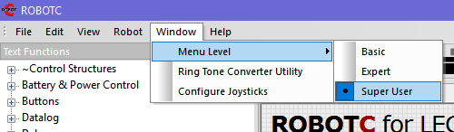
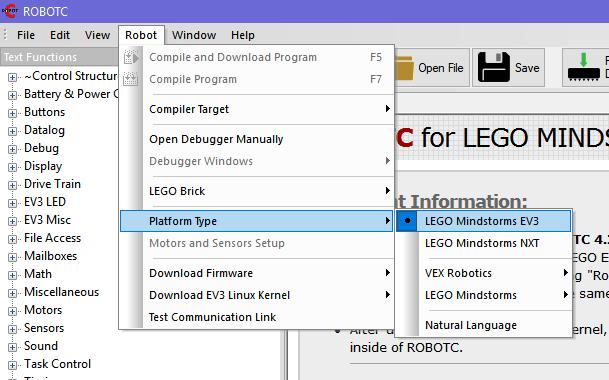
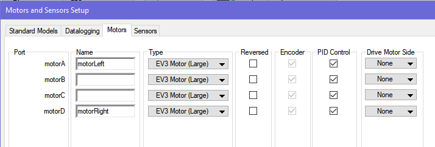
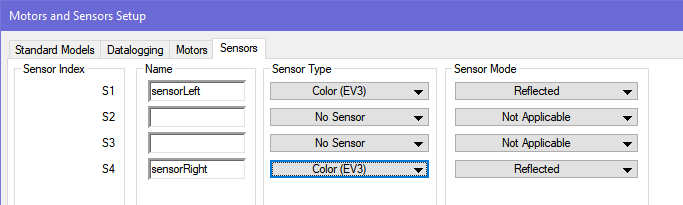
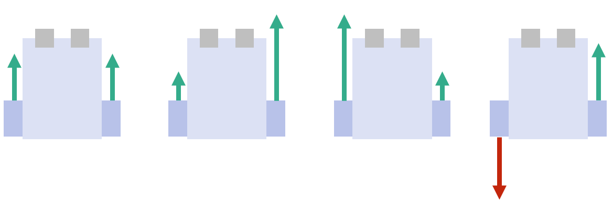

© Fort Street High School Robotics
To get started with RobotC, download it. Click on the blue button after you click the below blue button.
If you are stuck there are full instructions here.
Once downloaded, make sure the following two options are selected:


motorLeft and motorRight.
sensorLeft and sensorRight. Set them to be Color (EV3).
Colour sensors return red, green and blue (RGB) values. They're like light sensors but instead of shining red/white light and measuring the reflected light, they shine red, green and blue light and measure their reflected components.
This is a lot of data to work with (you will have six variables, 3 for left sensor, 3 for right). Sometimes we add them up to get a combined 'white' value (though you will notice some colours change slower than others). You will have to experiment with this.
Our eyes also do not see the same way as a colour sensor - what we say is green might not be green. So, always trust your colour sensor. (If you print a piece of paper that has a rgb(255,0,0) red square, you won't actually get a reading of 255, 0, 0 - printers usually print brighter than actual).
The main function is the one that will be run at the very start. Later, you might make some other functions.
Let's first try and read in the left sensor values, and then print it on the screen. To repeatedly show it on the screen, we need to surround it in a loop.
Note: you can find the functions getColorRawRGB and displayCenteredTextLine under 'Sensors' and 'Display' on the left 'Text Functions' panel. You can drag these functions into your code.
task main()
{
int lr,lg,lb; // create the variables
// Repeatedly do what is in the brackets
while (true) {
// Like scanf, input colour intensities into variables
getColorRawRGB(sensorLeft, lr, lg, lb);
// Print it on the 2nd line of the screen
displayCenteredTextLine(2, "%d %d %d", lr, lg, lb);
}
}
Here, we use two new functions:
getColorRawRGB(nDeviceIndex, pRedChannel, pGreenChannel, pBlueChannel);, where nDeviceIndex is the name of your sensor (or S1, S2, ...)displayCenteredTextLine(nLineNumber, pChar, ...);, where nLineNumber is the number from 1 to 8, and pChar, ... is what you would put in a printf statement. We can apply what we've learnt from if statements to do more.
What does this program do?
task main()
{
int lr,lg,lb; // create the variables
// Repeatedly do what is in the brackets
while (true) {
// Like scanf, input colour intensities into variables
getColorRawRGB(sensorLeft, lr, lg, lb);
// Print it on the 2nd line of the screen
displayCenteredTextLine(2, "%d %d %d", lr, lg, lb);
// If a particular condition is met
if (lr > 30) {
motor[motorLeft] = 50;
motor[motorRight] = 0;
}
// Otherwise...
else {
motor[motorLeft] = 0;
motor[motorRight] = 50;
}
}
}
red > (blue + green). Test it out on common red objects (e.g. your diary).playImmediateTone(<frequency>, <duration in 10ms>), e.g. playImmediateTone(100, 10). displayCenteredTextLine(<line>, <string>), e.g. displayCenteredTextLine(2, "black");.if (left is on black, right is on white) {
turn right a bit
}
else if (left is on white, right is on black) {
turn left a bit
}
else {
// both are on white, or both on black
go forward
}
Think about which directions the robot should go in:
